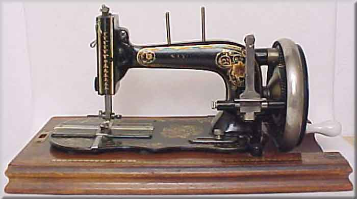
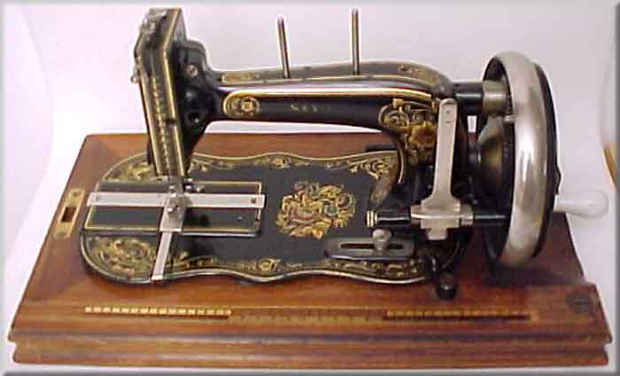
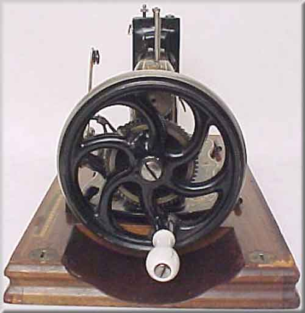
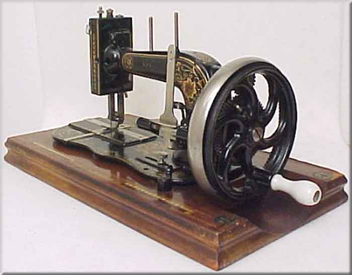
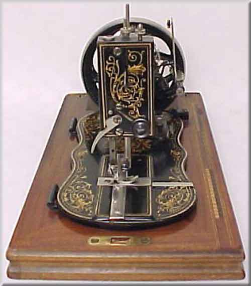
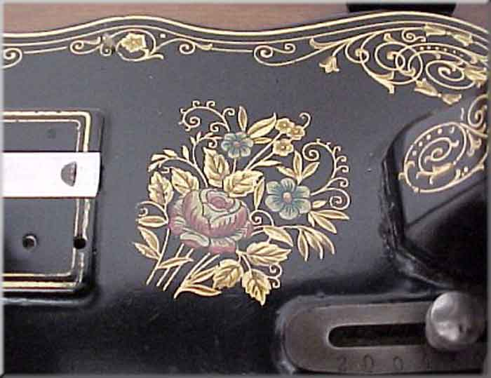
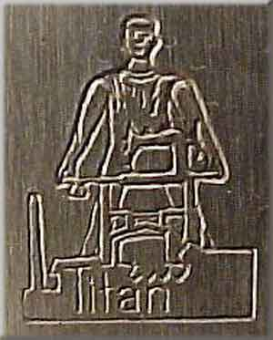

Winselmann
Maker: Winselmann, Altenburg, Thüringen
Model: Saxonia
Serial #: ?
Date: ?
Front View / Top View / Balance Wheel / Right Quarter View
Faceplate / Bed Decal / 'Titan' Logo
Front View

Top View

Balance Wheel

Right Quarter View

Faceplate

Bed Decal

'Titan' Logo

©
Alan Quinn 2001
Pictures posted on this page may not be reproduced or distributed in part or in whole without the prior written permission of the relevant copyright owner